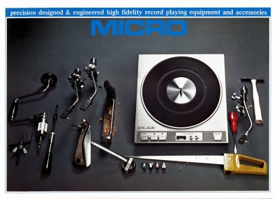
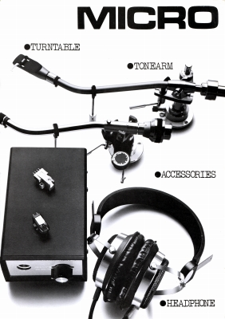
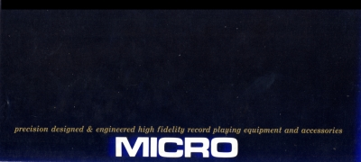
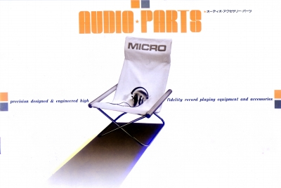
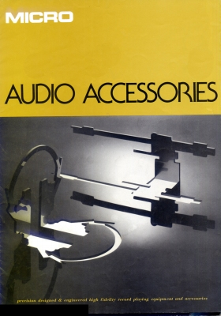

MICRO(マイクロ) カタログギャラリー
(カタログ画像をクリックすると原寸大のPDFファイルが開きます）
�@1974年2月アクセサリーカタログ

�@1976年2月アクセサリーカタログ

�A1977年1月総合カタログ

�B1970年代後半のカタログ（その1） 正確な時代はわからないがMX-5が掲載されているので1978〜79年頃のもの。

�C1970年代後半のカタログ（その2） 正確な時代はわからないが掲載機種からみて「その1」のあとのもの。

マイクロのページへ